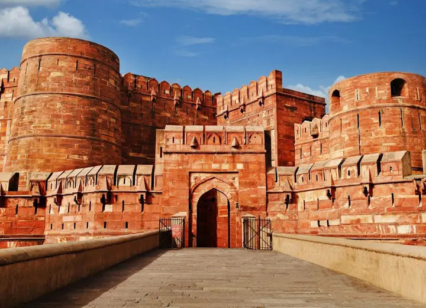
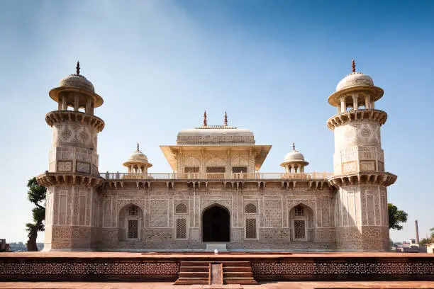
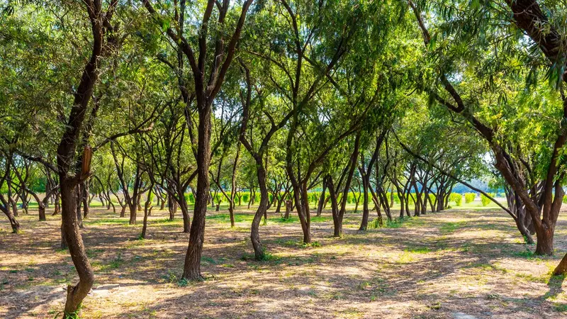
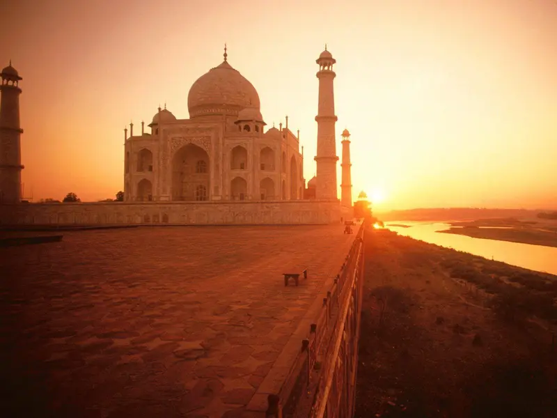
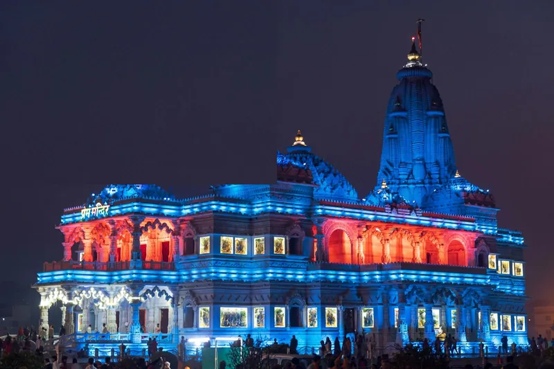
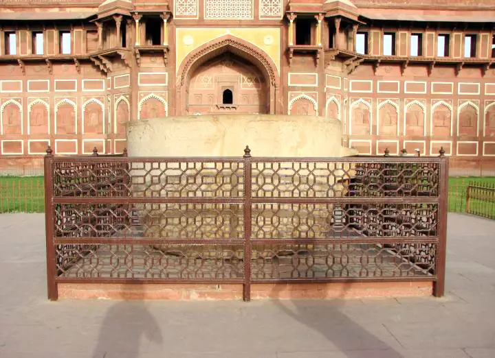

Taj Mahal ticket price and timings: the complete guide for 2026
Entry fees for Indians, SAARC visitors and foreigners, the extra mausoleum ticket, opening hours, the Friday closure and what you can and cannot take inside.
Read it
Home / Journal
Things we find ourselves explaining on the phone, written down — timings, seasons, packing and the handful of traps worth knowing about.
Entry fees for Indians, SAARC visitors and foreigners, the extra mausoleum ticket, opening hours, the Friday closure and what you can and cannot take inside.
Read itYes, you can see the Taj Mahal and Agra Fort and be back in Delhi for dinner. Here is how the day actually runs, what it costs and whether to go by car or by the Gatimaan Express.
Read it
India's first semi-high-speed train gets you from Delhi to Agra in about 100 minutes. Timings, classes, the Friday rule and how to fit the Taj Mahal and Agra Fort into the day.
Read it
Agra is more than one monument. Here is our local list — what each place is, how long to give it and how to fit it around the Taj Mahal.
Read it
The Taj Mahal opens at night for five nights around each full moon. How the slots work, what tickets cost, and the best alternatives if you cannot get one.
Read itHow long the drive really takes, what the expressway is like, where to stop on the way and why a private car with a local driver beats self-drive.
Read itA whole Mughal capital in red sandstone, built and left within a generation. Distance from Agra, tickets, what to see and how to fit it into a day.
Read it
Sunrise is the honest answer, but it depends on the month, the fog and whether you mind getting up at four.
Read it
Krishna's birthplace and the town where he grew up, an hour from Agra. Which temples to see, when they open, and how to combine them with the Taj Mahal.
Read itThe sweets, breakfasts and Mughlai dishes Agra is known for, where locals eat them and how to eat street food safely on a short visit.
Read itHow to tell a licensed guide from a tout, the five scams we see most often at the Taj Mahal, and what a good guide actually adds to your visit.
Read itHow Ranthambore's safari zones work, whether to book a jeep or a canter, the best months for tigers and how to fit the park between Agra and Jaipur.
Read it
Three days is sold hardest. Five is where the trip stops feeling like a transfer schedule with monuments attached.
Read itCommission shops, fake e-Visa sites, the 'your hotel is closed' routine — most of it is avoidable if you know the shape of it.
Read it
Layers in winter, less than you think in summer, and one pair of shoes you can get on and off quickly.
Read itMost people give Agra four hours. The city rewards two days, and the quietest monuments are the best ones.
Read itAsk us directly. We answer within about half an hour during Indian daytime hours.